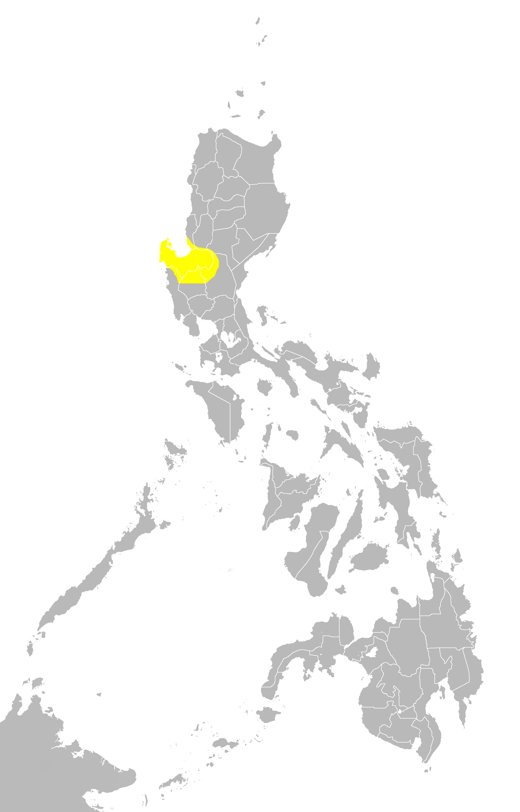

Ang wika ay isang sistemang komunikasyon na madalas ginagamit ng tao sa isang partikular na lugar. Ginagamit ang sistemang ito sa pagpapaabot ng kaisipan at damdamin sa paraan ng pagsasalita at pagsusulat (Rey, 2019).
Lenggwahe o Wika ng Pilipinas
May walong pangunahing wika ang ating bansa. Ang mga ito ay: Ilokano, Pangasinense, Pampango, Tagalog, Bikolano, Cebuano, Hiligaynon o Ilonggo, at Waray.
Nasa gawing ibaba ng bandang ikalawa ang iba pang impormasyon tungkol sa bawat isa.
Pambansang Wika: Filipino, Pilipino, o baka naman Tagalog?
Tagalog ang naging basehan ng pambansang wika natin sapagkat marami na ang gumagamit nito noon. Bininyagan naman ang Tagalog at naging Pilipino noong 1959. Ito ay upang maihiwalay ang Tagalog sa wikang pambansa. Pinalitan naman ang Pilipino ng Filipino — ang nasyonal lingua franca ng bansa.
Ilokano
Ang Ilokano ay winiwika sa hilagang bahagi ng Luzon. Pangatlo ito sa pinakamalalawak na wika sa buong Pilipinas.[76]
[77]
Pangasinense
Ang Pangasinense naman ay ginagamit sa Pangasinan at karatig lalawigan nito. Ikawalo ito sa mga pinakasinasalitang wika sa bansa.

[80]
Pampango
Ang Pampango o Kapampangan ay sinasalita sa gitnang Luzon, lalo na sa Pampanga at karatig probinsya nito. Ikapito naman ito sa mga pinakasinasalitang wika sa bansa.
[79]
Tagalog
Dahil ito ang basehan ng pambansang wika, ang Tagalog ay ang pinakaginagamit na wika sa buong bansa at pinakamaraming gumagamit.
[82]
Bikolano
Ito ay ginagamit ng halos lahat sa peninsula ng Bicol. Minsan itong nahahalo sa Bisaya at tinatawag na "Bisakol".
[84]
Cebuano
Kilala rin sa tawag na Bisaya o Binisaya, ang Cebuano ang lingua franca sa mga pulo sa Visayas at maraming lugar sa Mindanao.
[86]
Hiligaynon
Ang Hiligaynon o Ilonggo ay winiwika ng mga taga-kanlurang bahagi ng Viasayas at SOCCSKSARGEN region. Ito ang ikaapat na pinakaginagamit na wika sa buong bansa.
[89]
Waray
Tinatawag ding Waray-waray o Samaran, ang Waray ay ginagamit sa silangang bahagi ng Viasayas at ibang lugar sa Mindanao. Ito ang ikalima sa pinakagamit ng wika ng Pilipinas.
[87]